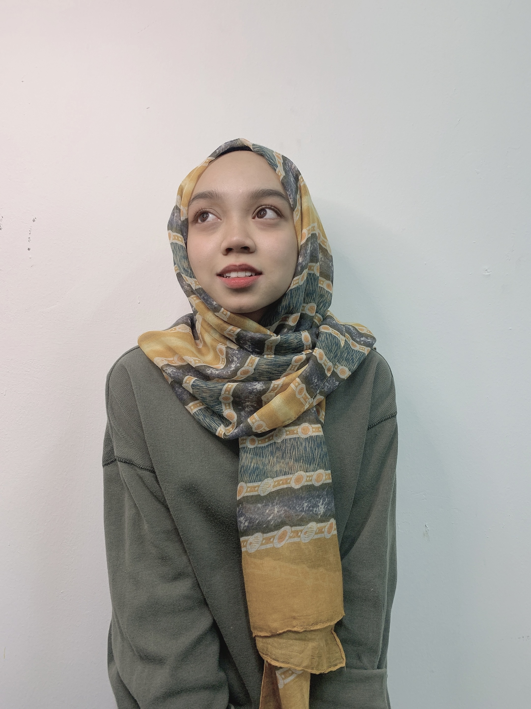
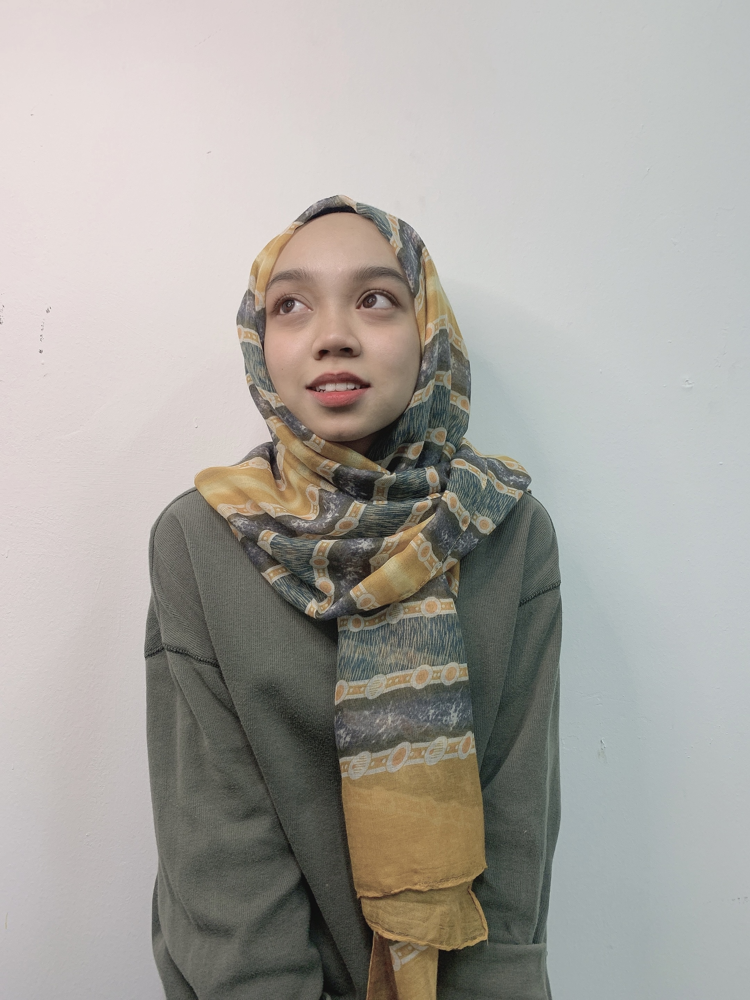
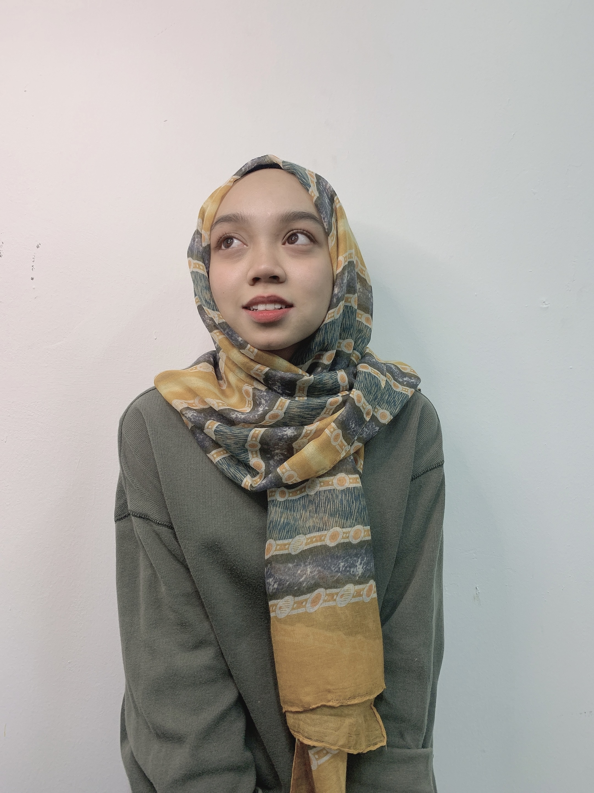

GALLERY


 

I am a twenty one year old Sharifah Nursyafiqah from the stately city of
Petaling Jaya, Damansara Damai. I reflect a varied personality including
ambition, and the qualities of generosity and thoughtfulness. I am also a
well determined and vigorous individual, yet pleasently calm. I encourage
fighting for what you desire and believe in, and doing it through Allah
because nothing great comes easy and with Allah everything is possible.
I am most commonly known as Kaka, which has been my nickname since 2019.
One of my interests is listening to music via Spotify applications and playing
with kitties. I have eight cats at home, one of which I've had since 2014. My
passion for cats is so strong that I cry whenever I see a cat in Gaza or a cat
impacted by flooding. I aim to provide food to street cats every weekend once
I'm employed and established.
I am a full-time student, motivated by my love for learning and succeeding
as I strive to become an outstanding and successful woman in today's society.
With the definitive goal of becoming a professional Information Technology
Manager, I am currently completing the Diploma Of Information Management at
UiTM Rembau and soon will be taking a Bachelor of Information Science (Hons)
Information Content Management.
My first and most recent employment experience is with a firm that offers children's
and adult headscarves, specifically the TudungSiComel brand. I worked with this
company as a marketing executive from 28 February to 18 October 2021 and am now a
part-time employee in order to focus on my studies during this final semester.
At this company, I sell hijabs on Facebook live, manage the company's Instagram
platform, work as a hijab model, create banners, edit posters, edit videos, and
pack orders for customers, among other things.
My memories of working at this company are quite lovely. I had no idea such a
wonderful employer existed until I met the owner of this company, whom we refer to
as Encik Syah. The work environment was also rather pleasurable, as all of the staffwere quite pleasant and amusing. Everyone involves practical guidance.
I spent a year at kindergarten in 2007, when I was six years old. I once received an award for perfect attendance due to the fact that I never missed a day of kindergarten. This kindergarten is located in Apartmen Lestari, Damansara Damai.
Started school here when I was 9 to 12 years old, in 2010 to 2013. Here for the UPSR examinations. Experienced in representing the school for badminton competitions despite losing at the beginning of the round.
From 2014 through 2018, I attended this school. Here for the PT3 and SPM examinations. Has represented Petaling Utama in softball between 2015 and 2018 and brought home a gold medal, establishing the school's reputation.
I am currently enrolled in semester 5 of the Diploma in Information Management as a full-time student. I began studying here in the year 2019 and am currently in the year 2022.
| Father | The name given was Syed Badaruzzaman and he is 56 years old. A very great father to his children which i called him "Ayah". He is very kind and dedicated in doing something that is related to his life. |
| Mother | Ani binti Awalludin is such a great and wonderful person that i called her "Ibu". Currently, she is 56 years old the same old as my father and she is a housewife. Everything about her is perfect. |
| First Brother | The oldest child in this family goes to Syed Muhammad Taufiq which I called him "Along" and he is 31 years old. He is currently working as a lorry driver and still not married yet |
| Sister | Sharifah Nurshakira, my only one sister in this family which I called her as "Kakak". She is 28 years old according to the year we are currently in. Just got married last year and now decided to be a housewife. |
| Brother in law | Shawal Fikry, my one and only brother in law and I called him "Abang Shawal". He is the same old as her wife (Kakak) which is 28 years old. He is a fulltime GrabFood Rider. He is very generous with me |
| Second Brother | Syed Muhammad Affendi, my second brother which I called him "Abang". He is currently24 years old. Same as Abang Shawal, he is a fulltime GrabFood Rider. He is the most funny sibling in my family. |
| Me | yes! I'm the youngest one in this family. I'm 21 years old and currently, still studying at UiTM Rembau in course Information Management. |

- A video of me and my bestfriend 💓 -
- Cousins. -
- My first modeling job -
- Me with my cute cats. -